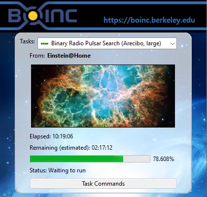

TRY: Searching for pulsars

SETI@home is well known in the astronomy community. The project is no longer collecting new data; however data revision continues today. SETI@home (not imaged) and other projects operate similarly using Berkely Open Infrastructure for Network Computing (BOINC).
Einstein@home calculates radio astronomy sets in search of new pulsars in our galaxy.